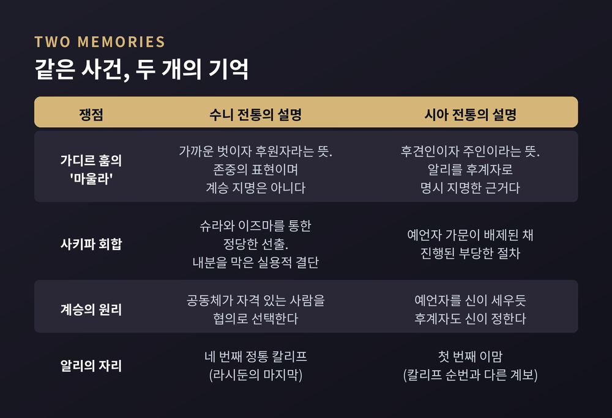
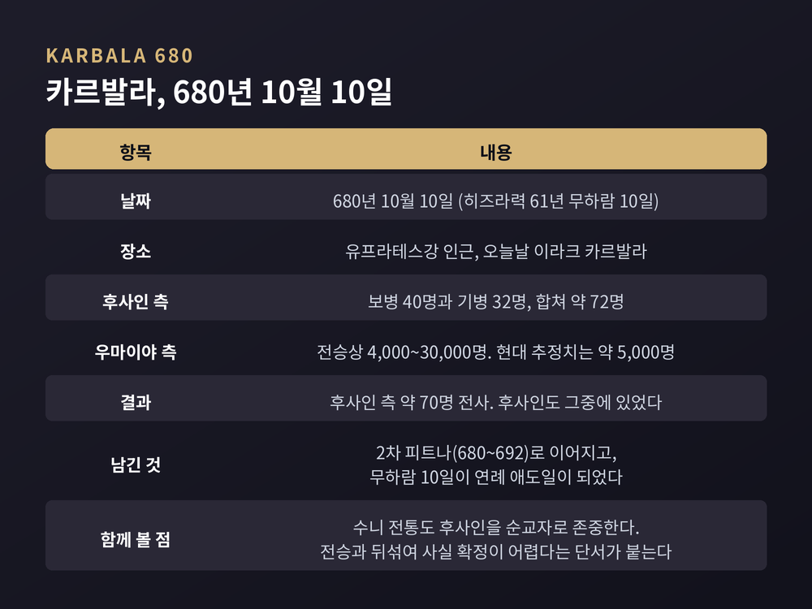
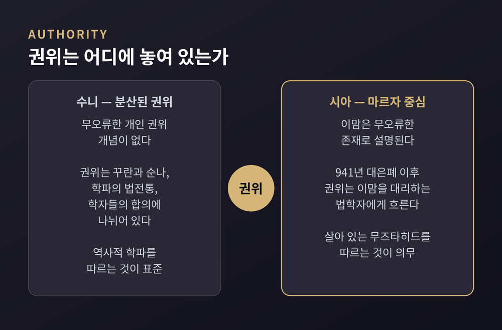
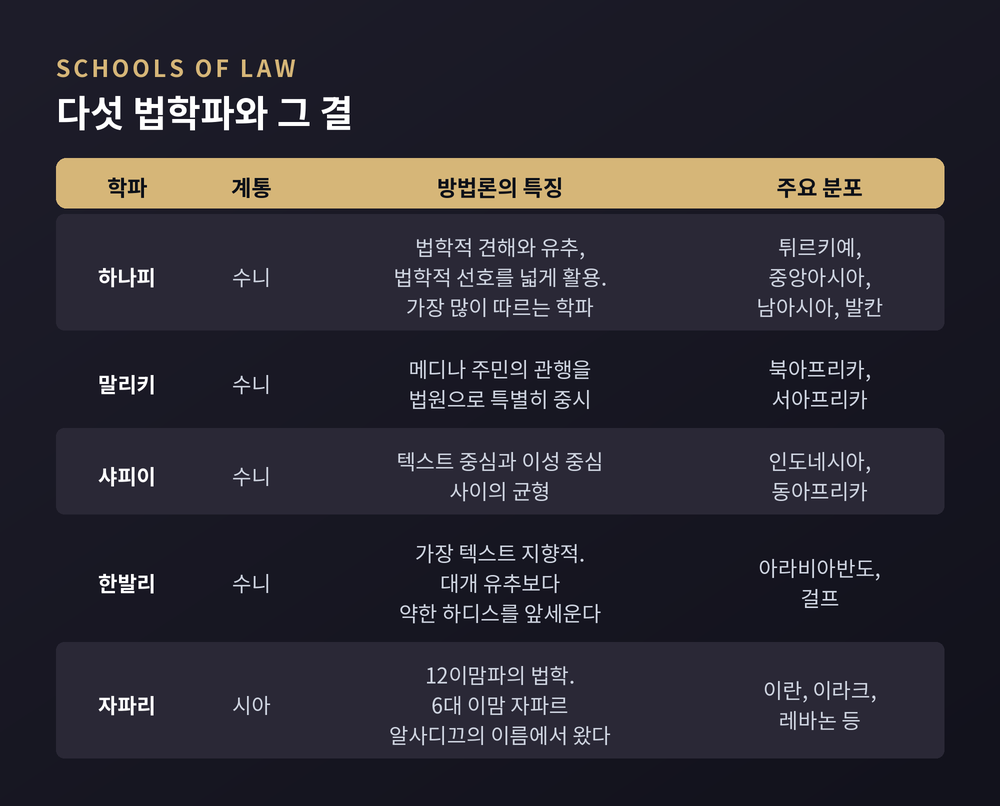
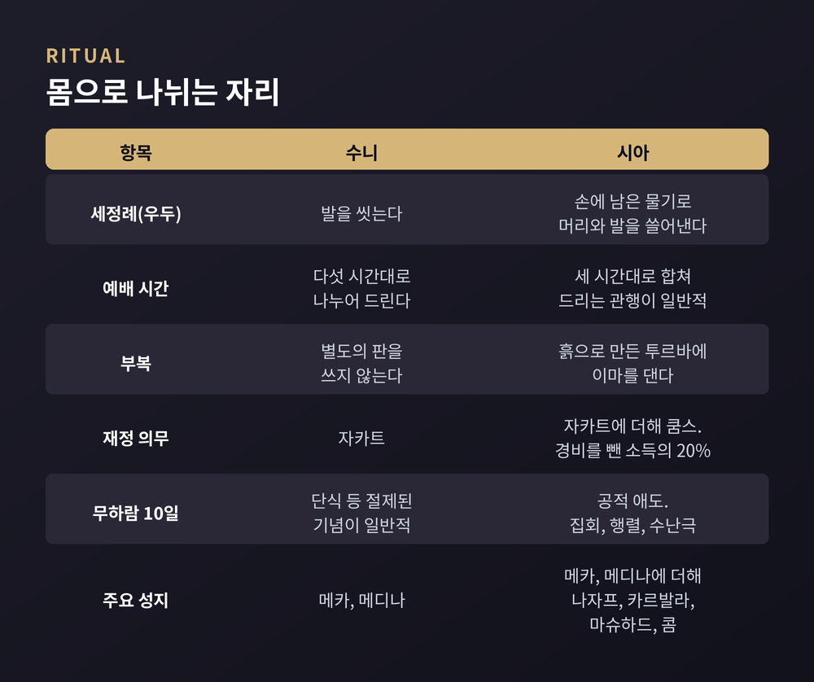
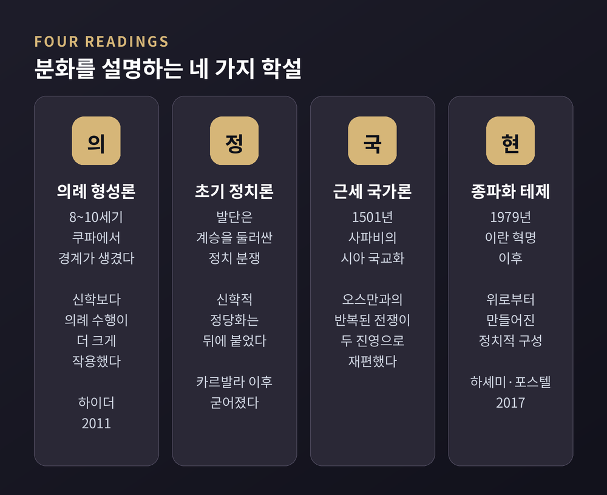

종교학으로 읽는 이슬람 분화의 역사와 쟁점 — 카르발라의 기억, 이맘과 마르자, 법학파와 하디스 전승, 그리고 '고대의 증오'라는 서술에 대한 학계의 반론
이번 글에서는 이슬람이 수니와 시아로 갈라진 과정을 종교학의 시선으로 정리해 보겠습니다. 어느 쪽이 정통인지 가리는 글이 아닙니다. 두 전통이 자기 자신을 어떻게 설명해왔고, 그 경계가 언제 어떻게 만들어졌는지를 따라가 보려 합니다.
세 줄 요약
무함마드는 632년에 세상을 떠났습니다. 남성 후계자는 없었습니다. 종교적 계시는 그로써 끝났다는 데 이견이 없었지만, 공동체를 이끄는 자리는 비어 있었습니다.
질문은 단순합니다. 누가, 그리고 무슨 자격으로 그 자리에 앉는가.
여기서 두 개의 답이 나왔습니다. 하나는 공동체가 자격 있는 사람을 협의로 뽑는다는 답입니다. 다른 하나는 예언자를 신이 세우듯 후계자도 신이 정한다는 답입니다.
두 집단의 이름 자체가 이 답에서 나왔습니다. 시아는 아랍어 '시아트 알리(Shi'at Ali)', 곧 '알리의 당파'의 줄임말입니다. 수니는 '아흘 알순나 왈자마아(ahl al-sunna wa'l-jama'a)', 곧 '순나와 공동체의 사람들'의 줄임말입니다.
다만 이름이 곧바로 굳어진 것은 아닙니다. '수니'라는 짧은 집단명은 상당히 늦게 정착한 표현입니다. 압바스조 칼리프 알마문이 재위하던 9세기 초(813~833)의 미흐나 칙령에서 "순나에 자신을 결부시키며 스스로를 진리와 종교와 공동체의 사람이라 주장하는 무리"를 비판한 대목이 초기 용례로 언급됩니다.
이름조차 사건 직후가 아니라 두 세기가 지나 자리를 잡은 셈입니다.
두 전통이 각기 기억하는 장면이 있습니다.
먼저 가디르 훔입니다. 632년 3월 16일, 무함마드가 고별 순례에서 돌아오던 길의 설교입니다. 여기서 "알리는 나의 마울라(mawla)다"라는 말이 나왔습니다.
수니 전통은 이 말을 존중과 애정의 표현으로 읽습니다. 마울라를 가까운 벗, 후원자, 신뢰받을 만한 사람이라는 뜻으로 봅니다. 알리에 대한 각별한 평가일 뿐 정치적 계승 지명은 아니라는 설명입니다.
시아 전통은 같은 말을 후견인이자 주인이라는 뜻으로 읽습니다. 무함마드가 알리를 후계자로 명시 지명(nass)했다는 결정적 근거로 봅니다.
다음은 사키파입니다. 무함마드 사망 직후 바누 사이다 씨족의 지붕 덮인 마당에서 일부 교우들이 모여 아부 바크르에게 충성 서약을 했습니다.
수니 전통은 이를 슈라(협의)와 이즈마(합의)를 통한 정당한 선출로 설명합니다. 내분을 막기 위한 실용적 결단이었다는 것입니다. 시아 전통은 예언자의 가문이 배제된 채 진행된 부당한 절차로 봅니다.
같은 사건입니다. 그런데 두 기억은 겹치지 않습니다.

이후의 순서는 이렇습니다. 아부 바크르, 우마르, 우스만, 그리고 알리가 차례로 공동체를 이끕니다. 수니 전통은 이 넷을 '라시둔(정통 칼리프)'이라 부릅니다. 시아 전통에서 알리는 네 번째 칼리프가 아니라 첫 번째 이맘입니다.
호칭 하나에 계승관 전체가 담겨 있습니다.
656년 3대 칼리프 우스만이 살해되면서 공동체는 내전에 들어갑니다. 1차 피트나(656~661)입니다.
알리와 시리아 총독 무아위야가 충돌했고, 657년 5월부터 7월까지 시핀에서 교전과 협상이 이어졌습니다. 이 대치는 658년 2월부터 이듬해 1월까지 이어진 아드루흐 중재로 마무리되는데, 그 결과는 오히려 알리의 권위를 약화시켰습니다.
중재를 인간에게 맡겼다는 이유로 이탈한 집단이 하와리지입니다. 알리는 658년 나흐라완에서 이들을 격파했고, 661년 나흐라완의 복수를 노린 하와리지 일원에게 살해됩니다. 무아위야가 우마이야조의 첫 칼리프가 됩니다.
그리고 카르발라입니다.
무아위야가 아들 야지드를 후계로 지명하면서 칼리프제는 사실상 세습 군주제로 바뀝니다. 알리의 아들이자 무함마드의 외손자인 후사인이 이에 반대했습니다.
후사인은 쿠파 주민들의 지지 약속을 믿고 680년 9월 9일 메카를 떠났습니다. 가족과 약 50명의 남성이 동행했습니다. 그러나 쿠파는 이미 우바이둘라 이븐 지야드의 진압으로 침묵한 뒤였습니다.
680년 10월 10일, 히즈라력으로 무하람 10일. 유프라테스강 인근의 카르발라 벌판에서 전투가 벌어집니다. 후사인 측은 보병 40명과 기병 32명, 합쳐 약 72명이었습니다. 우마이야 측 병력은 전승에 따라 4,000명에서 3만 명까지 편차가 크고, 현대 추정치는 약 5,000명입니다. 우마이야군은 500기병으로 강물 접근을 차단했습니다.
전투는 새벽에 시작해 정오 무렵 끝났습니다. 후사인 측에서 약 70명이 전사했고, 후사인도 그중에 있었습니다. 병으로 참전하지 못한 아들 알리 자인 알아비딘만 살아남았습니다.

군사적으로는 작은 교전이었습니다. 그러나 남긴 것은 그렇지 않았습니다.
이 사건은 우마이야조에 대한 반감의 핵심 상징이 되어 2차 피트나(680~692)로 이어졌고, 약 70년 뒤 압바스 혁명이 성공하는 데도 이 정서가 동원되었습니다. 시아 전통에서 후사인의 죽음은 순교의 원형이자 구원의 약속으로 자리 잡았고, 무하람 10일은 해마다 돌아오는 공적 애도일이 되었습니다.
한 가지 덧붙일 것이 있습니다. 수니 전통도 후사인을 순교자로 존중합니다. 압제에 맞선 인물이라는 평가에 양쪽이 크게 다르지 않습니다. 후사인은 지금도 수니와 시아 모두에서 흔한 이름입니다. 다만 수니 쪽은 카르발라라는 장소 자체에 종교적 가치를 두지 않고, 자해를 동반한 애도 의례에 대해서는 후사인이 지킨 가치와 어긋난다고 보는 견해가 있습니다.
역사가들은 이 사건을 다룰 때 한 가지를 미리 밝힙니다. 카르발라는 너무 자주 인용되고 전승·설화와 뒤섞여, 역사와 전설을 분리하는 일이 사실상 불가능하다는 것입니다.
정치적 사건보다 오래 남은 것은 권위 구조의 차이입니다.
12이맘파 신학에서 이맘은 무오류(ma'sum)한 존재로 설명됩니다. 공동체를 정의롭게 이끌고, 샤리아를 유지하고 해석하며, 꾸란의 내적 의미를 풀어냅니다. 근거가 되는 논리는 이렇습니다. 신은 인류를 인도 없이 내버려두지 않는다.
그런데 문제가 생깁니다. 이맘이 사라진 것입니다.
11대 이맘 하산 알아스카리가 874년에 사망합니다. 그에게 무함마드라는 아들이 있었고 은폐(ghayba)에 들어갔다는 주장이 나옵니다. 이후 네 명의 대리인을 통해 간접 소통이 이어진 시기를 소은폐(874~941)라 부릅니다. 941년 네 번째 대리인이 사망하면서 대은폐가 시작됩니다. 종말의 때까지 이맘은 돌아오지 않습니다.
이 부재가 제도를 만들었습니다.
이맘이 없는 동안 권위는 이맘을 대리하는 법학자를 통해 흐릅니다. 여기서 성직 위계와 마르자 알타클리드(marja' al-taqlid, 모방의 원천) 제도가 형성됩니다. 19세기 우술리 운동 이후로는, 법학 전문성이 없는 신자가 살아 있는 무즈타히드에게 실천적 지침을 구하는 것이 의무로 여겨집니다. 마르자의 판단은 그를 따르는 신자의 실천 사안에 구속력을 갖습니다.
수니 쪽은 다릅니다. 살아 있는 개인에게 집중되는 무오류 권위 개념이 없습니다. 권위는 꾸란과 순나라는 텍스트, 학파가 축적한 법전통, 학자 공동체의 합의에 분산됩니다.

정리하면 이렇게 갈립니다. 시아 쪽에서는 '살아 있는 최고 법학자를 따르는 것'이 제도가 되었고, 수니 쪽에서는 '역사적 학파를 따르는 것'이 표준이 되었습니다.
참고로 시아 내부도 하나가 아닙니다. 12이맘파가 시아의 약 85%를 차지하고, 이스마일파와 자이드파가 각각 다른 계보를 잇습니다. 자이드파는 전체 무슬림의 0.5% 정도로 주로 예멘에 분포합니다.
수니 법학은 네 학파로 정리되었습니다.
하나피는 법학적 견해(ra'y)와 유추(qiyas), 법학적 선호(istihsan)를 폭넓게 활용합니다. 세계에서 가장 많은 신자가 따르는 학파로, 튀르키예와 중앙아시아, 남아시아, 발칸에 분포합니다. 말리키는 메디나 주민의 관행을 법원(法源)으로 특별히 중시하며 북·서아프리카에 자리 잡았습니다. 샤피이는 텍스트 중심과 이성 중심 사이의 균형을 취했고 인도네시아와 동아프리카에서 널리 따릅니다. 한발리는 가장 텍스트 지향적이어서 대개 유추보다 약한 하디스를 앞세우며, 아라비아반도와 걸프 지역에 분포합니다.
네 학파는 꾸란, 순나, 이즈마, 키야스라는 법원을 공유합니다. 갈리는 것은 각 요소에 두는 가중치와 방법입니다.
시아 12이맘파의 법학은 자파리 학파입니다. 6대 이맘 자파르 알사디끄의 이름에서 왔습니다.

더 근본적인 차이는 하디스 쪽에 있습니다.
수니는 쿠툽 알싯타, 곧 6대 하디스집을 정전으로 삼습니다. 부하리와 무슬림의 집성이 대표적이고, 대체로 840년에서 912년 사이에 편찬되었습니다. 시아 12이맘파는 4대서를 씁니다. 알쿨라이니가 941년경 편찬한 알카피가 그중 첫 자리에 있습니다.
핵심은 전승 사슬(isnad)의 축입니다. 수니 전승은 예언자의 교우들을 거칩니다. 시아 전승은 상당 부분이 이맘들의 권위로 이어집니다.
서로에 대한 비판도 여기서 나옵니다. 수니 학자들은 시아 전승이 신뢰도가 낮거나 편향된 전승자에 의존한다고 봅니다. 시아 학자들은 수니 전승이 이맘을 우회하며 초기 칼리프들의 정당성을 뒷받침하려는 위작을 포함한다고 봅니다.
두 전통은 같은 꾸란을 읽습니다. 그러나 '누구를 믿을 만한 전승자로 볼 것인가'가 달라, 실질적으로 다른 법적 자료체를 갖게 되었습니다. 법학의 차이는 상당 부분 여기서 파생됩니다.
교리보다 눈에 먼저 들어오는 것은 몸의 동작입니다.
세정례(wudu)에서 시아는 손에 남은 물기로 머리와 발을 쓸어냅니다. 수니는 발을 씻습니다. 예배에서 시아는 하루 다섯 번의 예배를 세 시간대로 합쳐 드리는 관행이 일반적이고, 흙으로 만든 작은 판인 투르바에 이마를 대고 부복합니다. 그 흙은 흔히 카르발라의 것입니다. 수니는 투르바를 쓰지 않습니다.
재정 의무에도 차이가 있습니다. 시아 전통에는 쿰스(khums)가 있어, 경비를 제한 소득의 20%를 냅니다. 절반은 자선으로, 절반은 종교 지도자에게 갑니다. 주류 수니 전통에는 이 형태의 의무가 없습니다.

무하람 의례는 카르발라를 중심으로 발전했습니다. 추모 집회(마잘리스 알타지야), 무덤 참배(지야라), 공개 애도 행렬, 전투를 재현하는 수난극(타지야)이 그것입니다. 자해를 동반하는 타트비르도 있는데, 이 관행은 시아 내부에서도 논쟁적입니다. 여러 마르자가 금지하거나 헌혈로 대체할 것을 권해왔습니다.
성지의 지도도 다릅니다. 시아 쪽에는 나자프(알리), 카르발라(후사인), 마슈하드, 사마라, 콤이 신앙 실천의 큰 축을 이룹니다. 수니 쪽은 메카와 메디나 중심이며, 묘소 숭경에 대해서는 특히 한발리 계열에 강한 비판 전통이 있습니다.
규모를 보여주는 사례가 아르바인입니다. 아슈라로부터 40일 뒤, 나자프의 알리 묘에서 카르발라의 후사인 묘까지 약 78km를 사흘에 걸쳐 걷습니다. 길가에는 마와킵이라 불리는 천막이 늘어서 자원봉사자들이 음식과 차, 의료와 잠자리를 무료로 내놓습니다. 2025년 주최 측 집계로는 이맘 후사인 성지 관리처가 2,235만여 명, 알아바스 성지 관리처가 2,110만여 명을 발표했습니다. 두 기관의 측정 지점과 방식이 달라 숫자가 갈립니다. 독립 검증이 어려운 수치라는 점은 함께 기억할 만합니다.
퓨리서치센터의 추계를 보면 그림이 조금 달라집니다.
시아는 전 세계 무슬림의 10~13%입니다. 수니가 87~90%입니다. 2010년 기준으로 수니는 약 14억 1천만~14억 6천만 명, 시아는 1억 6,200만~2억 1,100만 명으로 추정됩니다. 2030년 전망에서도 이 비율은 거의 그대로 유지됩니다.
퓨리서치센터는 국가별 수니·시아 비율 자료가 대체로 개략 추정치라는 점을 명시하고, 그래서 단일 수치가 아니라 범위로 제시합니다.
시아가 다수인 나라는 네 곳입니다. 이란(무슬림 중 약 93%), 아제르바이잔(약 70%), 바레인(약 70%), 이라크(약 67%)입니다. 세계 시아의 68~80%가 이란, 파키스탄, 인도, 이라크 네 나라에 살고, 3분의 1 이상이 이란에 있습니다.
수니 쪽 규모 상위 국가는 이집트(약 99%), 인도네시아(약 99%), 방글라데시(약 99%), 파키스탄(약 87%)입니다.
여기서 눈여겨볼 것이 있습니다. 시아는 다수 지역이 좁고, 상당수 지역에서는 소수자로 살아왔다는 점입니다. 이 비대칭은 뒤에 나올 정치 이야기와 이어집니다.
오늘의 중동 갈등을 설명할 때 흔히 나오는 문장이 있습니다. 1,400년 묵은 종교적 증오가 지금도 작동한다는 문장입니다.
학계는 이 서술에 오래전부터 반론을 제기해왔습니다. 오리엔탈리즘적이고, 지나치게 단순하며, 근본적으로 부정확하다는 것입니다.
몇 갈래의 반론이 있습니다.
첫째, 도구주의입니다. 종파적 차이가 통치의 통제 수단으로 도구적으로 활용되어 왔다는 관점입니다. 파나르 하다드는 여기서 한 걸음 더 나아가 '종파주의(sectarianism)'라는 용어 자체를 문제 삼습니다. 맥락에 따라 뜻이 변하고 주로 부정적 딱지로 쓰이므로, '종파 정체성'과 '종파 동원'처럼 더 구체적인 말로 나눠 쓰자는 제안입니다.
둘째, 종파화(sectarianization) 테제입니다. 나데르 하셰미와 대니 포스텔이 엮은 2017년 옥스퍼드대 출판부 연구서가 대표적입니다. 이 관점에서 종파화는 위로부터 만들어지는 '깊이 인위적'인 과정이며, 실패한 통치의 원인이 아니라 결과입니다. 그리고 그것은 경제적·정치적 갈등이라는 실제 동인을 제조된 종교적 라이벌 관계로 가립니다.
이들이 지목하는 결정적 변수는 1979년 이란 혁명입니다. 혁명적 이슬람이 걸프를 건너올 것을 우려한 주변 권위주의 정권들이 그 힘과 호소력을 약화시키려 상당한 자원을 투입했고, 혁명을 '시아·페르시아 고유의 현상'으로 규정하는 전략을 폈다는 분석입니다. 2003년 이후의 이라크, 시리아, 레바논, 바레인, 예멘 사례가 그 뒤를 잇습니다.
셋째, 민족주의 프레임입니다. 브루킹스연구소는 오늘의 대립이 이슬람 내부의 갈등이라기보다 민족주의의 문제이며, 종파화된 전쟁의 뿌리는 이슬람 신학이 아니라 근대 민족주의에 있다고 정리합니다.
물론 절충적 시각도 있습니다. 미국외교협회(CFR)의 해설은 14세기를 이어온 분열이 오늘의 갈등을 전부 설명하지는 못하지만, 밑바닥 긴장을 이해하는 하나의 프리즘은 된다고 봅니다. 종파화 테제 쪽에서는 바로 그 프리즘이 실제 동인을 가린다고 반박합니다.
한 가지 시대적 매듭도 있습니다. 1501년 샤 이스마일 1세가 사파비 왕조를 세우고 12이맘 시아를 국교로 선포한 일입니다. 오스만·맘루크 같은 수니 이웃과 자신을 구별하려는 정치적 계산이 있었고, 1514년 오스만의 침공이 뒤따랐습니다. 학계는 사파비의 시아 국교화와 오스만과의 반복된 전쟁이 근동을 두 개의 종파 진영으로 재편하는 데 핵심 역할을 했다고 봅니다. 다만 '강제 개종'의 속도와 정도는 소스마다 서술이 달라, 급격한 전환보다 수 세대에 걸친 과정으로 보는 연구가 많습니다.
그래서 결정적인 것은 무엇일까요.
여러 답이 병존합니다.
의례 형성론은 경계가 8~10세기에 만들어졌다고 봅니다. 나잠 하이더의 2011년 케임브리지대 출판부 연구가 대표적입니다. 그는 8세기 쿠파를 들여다보며 물었습니다. 이맘파가 언제 쿠파의 모호한 친알리 정서 일반과 구별되는 독자적 공동체가 되었는가. 그가 분석한 것은 신학 논쟁이 아니라 바스말라 낭송법, 예배 중의 꾸눗, 음주 금지의 범위 같은 의례 논쟁이었습니다. 결론은 이렇습니다. 초기 시아의 자기규정 과정에서는 의례를 '올바르게' 수행하는 일이 문제적 신학 교리에 대한 지지보다 사실상 더 크게 작용했다.
초기 정치 갈등론은 발단이 신학이 아니라 계승을 둘러싼 정치 분쟁이었고 신학적 정당화는 사후에 붙었다고 봅니다. 카르발라 이후 정치적 차이가 신학적·의례적 구분으로 굳어졌다는 정리가 여기에 속합니다.
근세 국가형성론은 사파비-오스만 경쟁이 그은 선을 강조합니다. 근현대 정치구성론은 1979년과 2003년 이후에 무게를 둡니다.

어느 하나가 나머지를 이긴 상태가 아닙니다. 시간대가 다른 설명들이기 때문입니다. 씨앗이 뿌려진 시점, 경계가 만들어진 시점, 지도가 그어진 시점, 오늘의 갈등이 조직된 시점은 각각 다릅니다.
예전에는 "632년에 갈라졌다"는 한 줄이면 충분해 보였습니다. 지금은 그 한 줄이 네 개의 다른 질문을 뭉뚱그린 문장이었다는 쪽에 가깝습니다.
갈등만 있었던 것은 아닙니다.
2004년 11월 9일, 요르단 국왕 압둘라 2세가 발표한 암만 메시지가 그 예입니다. 여기서 여덟 개 법학파가 상호 인정되었습니다. 수니의 하나피·말리키·샤피이·한발리, 시아의 자파리·자이디, 그리고 이바디와 자히리입니다.
세 가지를 담았습니다. 꾸란과 순나에 근거한 원칙 확인, 여덟 학파 사이의 상호 인정과 존중, 그리고 파트와 발령의 권위 기준입니다.
문서의 표현이 분명합니다. 이들 학파를 따르는 사람을 배교자로 선언하는 일은 불가능하며 허용되지 않고, 그의 피와 명예와 재산은 불가침이라는 것입니다.
이 선언이 현실의 갈등을 멈추지는 못했습니다. 그 점은 인정해야 합니다. 다만 '다르다는 것이 곧 배교는 아니다'라는 원칙을 여러 나라 학자들의 이름으로 문서에 남겼다는 사실 자체는 남습니다.
끝으로 한 마디만 더 드리겠습니다.
이 글을 정리하며 가장 오래 붙들린 대목은 카르발라의 병력 숫자도, 인구 비율도 아니었습니다. 이름이 굳어지기까지 두 세기가 걸렸다는 사실이었습니다.
우리는 흔히 분열을 순간의 사건으로 상상합니다. 어느 날 금이 갔고, 그 금이 오늘까지 이어졌다고 생각합니다. 그런데 실제로 벌어진 일은 훨씬 느립니다. 사건이 있었고, 기억이 다르게 쌓였고, 의례가 다르게 몸에 배었고, 전승 목록이 갈렸고, 훗날의 국가가 그 위에 국경을 그었습니다.
"경계는 발견되는 것이 아니라 만들어진다."
종교학이 이 주제를 다루는 이유도 여기에 있다고 생각합니다. 어느 쪽이 옳은지를 판정하기 위해서가 아니라, 사람들이 어떻게 서로를 다르게 기억하게 되었는지를 보기 위해서입니다.
수니와 시아가 왜 갈라졌느냐고 물으신다면, 갈라진 이유보다 갈라짐이 만들어지는 데 걸린 시간을 먼저 보시길 권하겠습니다.